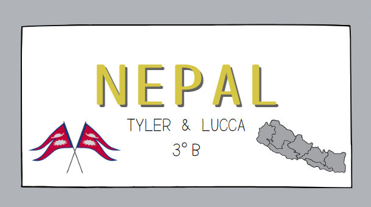

Nessa atividade, cada grupo escolheu um país para apresentar sobre sua realidade e geopolítica para a turma,
com essa atividade conseguimos analisar as nuances culturais, políticas e econômicas de diversas regiões,
assim sendo capazes de ampliar nossa visão de mundo e estando mais preparados e lucidos sobre as questões atuais
ao redor do mundo. Foi uma atividade muito interessante para mim, que adoro aprender sobre outros países.
Clique aqui
